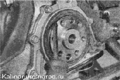

Задний сальник коленчатого вала - заменаСнятие 1. Снимаем маховик. При выполнении следующей операции не поцарапайте рабочую поверхность коленчатого вала. 2. Специальным крючком или аккуратно поддев отверткой... ...извлекаем сальник коленчатого вала из посадочного отверстия. Установка 1. Наносим чистое моторное масло на рабочую кромку нового сальника и равномерно запрессовываем его до упора легкими ударами молотка с пластмассовым бойком. Запрессовать сальник можно и обычным молотком, используя старый сальник как оправку. 2. Дальнейшую сборку двигателя выполняем в последовательности, обратной разборке. |